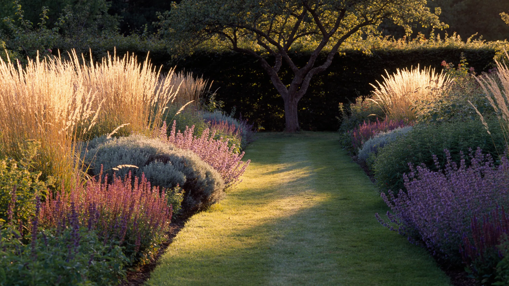
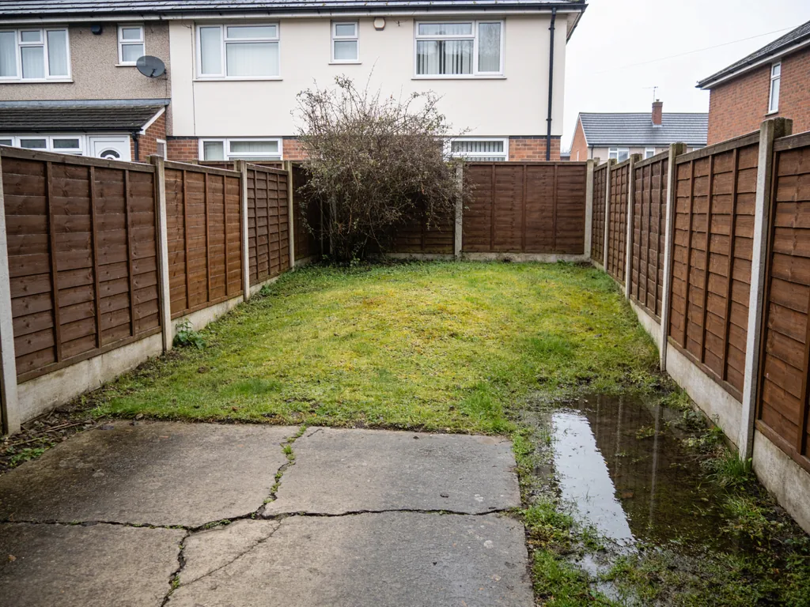
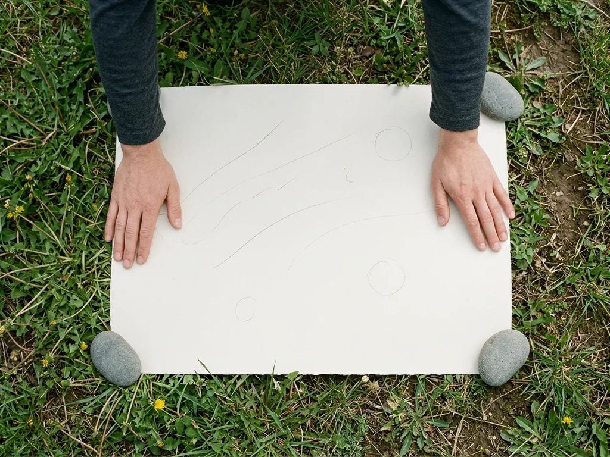
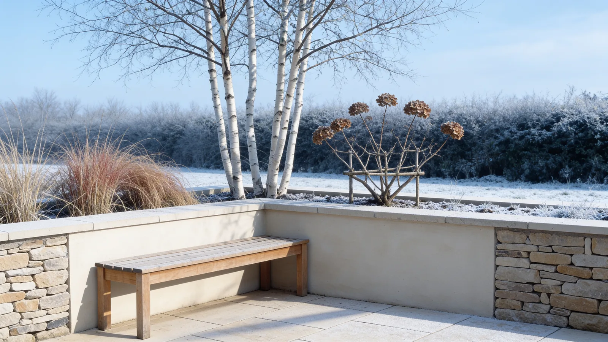
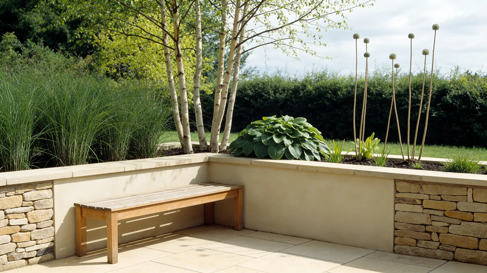
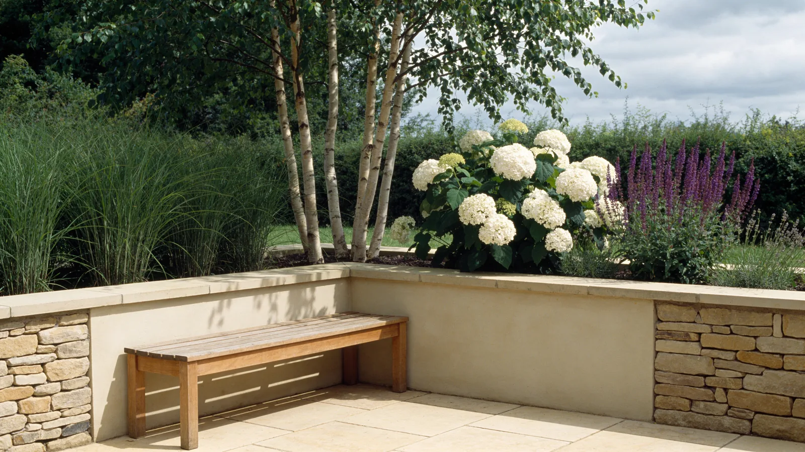
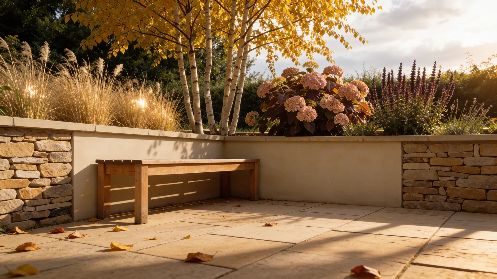
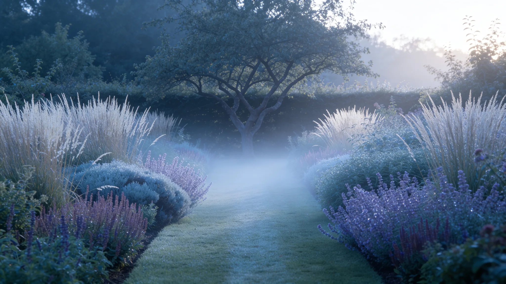

February
The bones show.
Nothing is in leaf, so the drawing is doing all the work — the line of the path, the height of the wall, where the light gets in. If a garden fails, it fails in February.

We draw what a space becomes — month by month, and year by year. This one was a drawing eleven years ago.
Sheet 01 · Survey
Every garden begins with two facts, and neither is a matter of taste: which way it faces, and which way the water goes. Everything after that is a decision. These two are given — so we measure them before we draw a line.
It is also where the studio got its name.


Sheet 04 · The year
Scroll, and the plan runs a year beside a photograph of the same corner. Nothing on the sheet is decoration: the colour is the planting, the circles are canopy spread at maturity, and the grey is shade at noon.
February
Nothing is in leaf, so the drawing is doing all the work — the line of the path, the height of the wall, where the light gets in. If a garden fails, it fails in February.
May
Everything is fresh, nothing has gone over, and every garden in the country looks competent — which is exactly why we do not design for it. Count what is actually in flower on this plan in May. Then look again at September.
July
By high summer the canopy is doing what it was planted to do. Half the terrace is in shade by two o'clock and the west end stays in sun until eight — which is the difference between a terrace and a patio nobody sits on. (The plan has always carried a note against that sunny end: cat sits here.)
October
Seed heads, bark and late colour. We plant for October the way other people plant for June — and the calendar below is how you check that we did.
Aspect & Fall · Sheet 04 · Planting plan · 1:100
In flower
5/13
Canopy shade
38%
Sun off terrace
20:10
Month
JUL




Sheet 05 · Interest calendar — what is doing something, and when
in flower structure, bark, seed
Sheet 05 · Interest calendar
in flower structure, bark, seed
Sheet 06 · Maturity
The circles are mature spread, drawn to scale. Plant at the spacing that looks right on day one and you are digging half of it out in year four. This is the part of the job that is hardest to sell and cheapest to get right — so we draw it, and you can hold us to the drawing.
Year 1 · as planted
Year 3
Year 10 · the drawing
The set
You keep these. Any competent contractor can build from them, and you can hand them to whoever has the garden next.
01 · SURVEY
Levels, aspect, existing trees, drainage, and what stays.
02 · SETTING OUT
Dimensioned, so it can be pegged out on the ground without us there.
03 · HARD LANDSCAPE
Materials, falls, build-ups and edge details.
04 · PLANTING PLAN
Every plant at mature spread, with a schedule of numbers and sizes.
05 · INTEREST CALENDAR
What is doing something, month by month, for the whole year.
06 · MAINTENANCE
In plain words. Two pages, not twenty.
07 · AS BUILT
Issued at handover, with whatever actually changed on site.

Sheet 07 · As built · year eleven